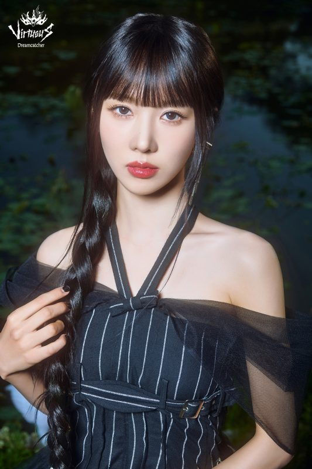

Yoohyeon

Kim Yoohyeon (김유현), mais conhecida como Yoohyeon, nasceu no dia 07 de Janeiro de 1997, em Incheon - Coreia do Sul.
Alguns fatos sobre a Yoohyeon:
- Ela é a vocalista líder do grupo
- Ama videogames, passa seu tempo livre jogando
- Seu dente coça quando ela está nervosa
- Foi trainee por 1 ano e meio
- Está aprendendo Mandarim e Alemão
Redes sociais da Yoohyeon: Instagram
Voltar